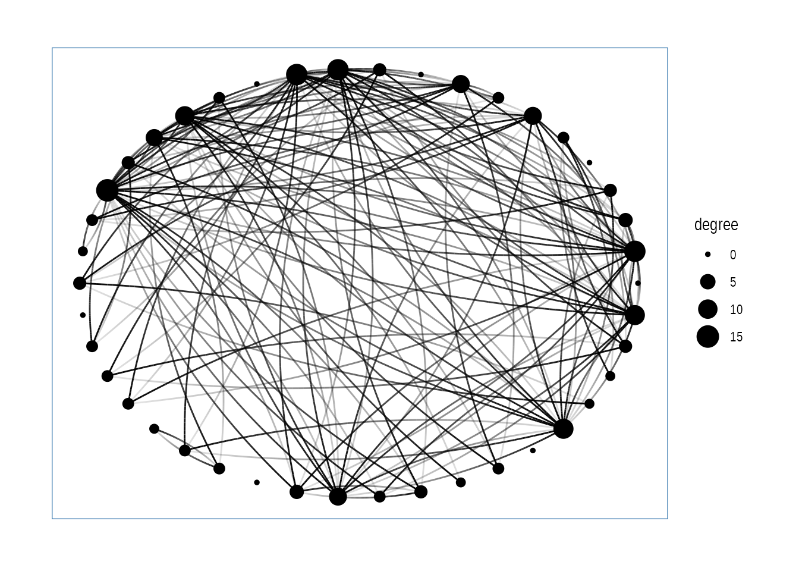
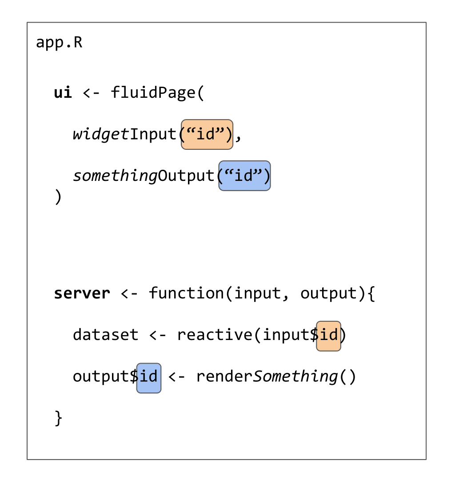
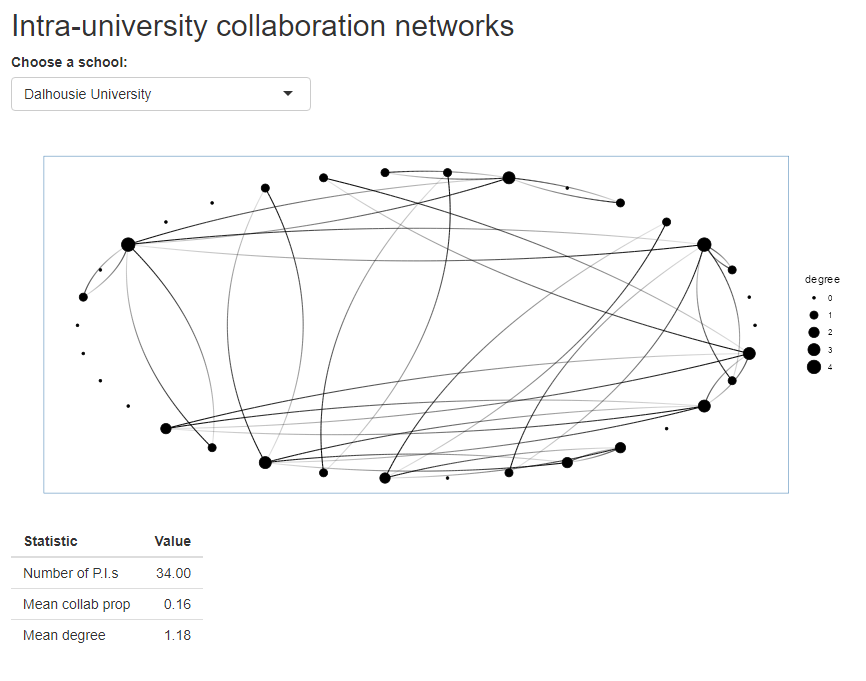
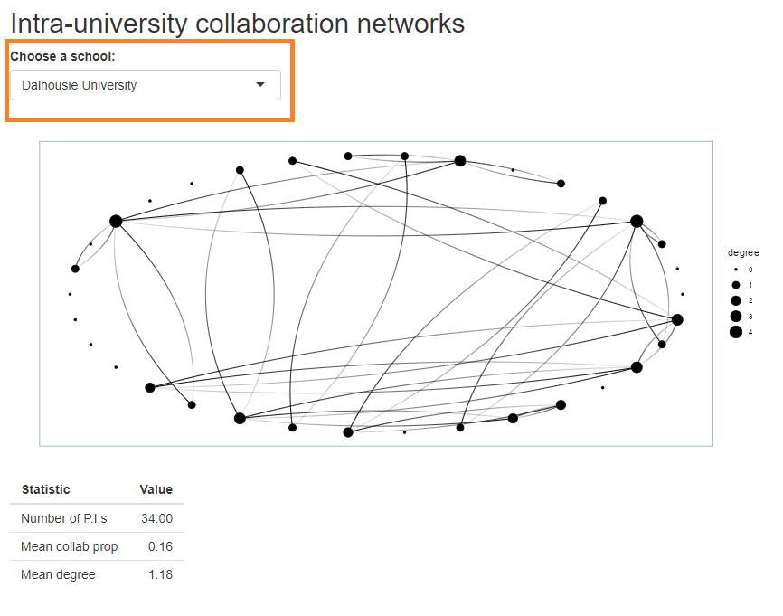
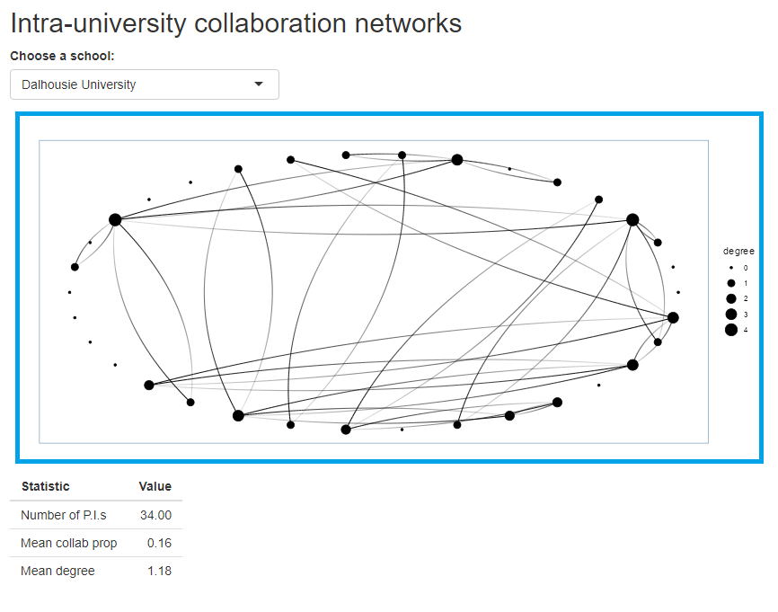
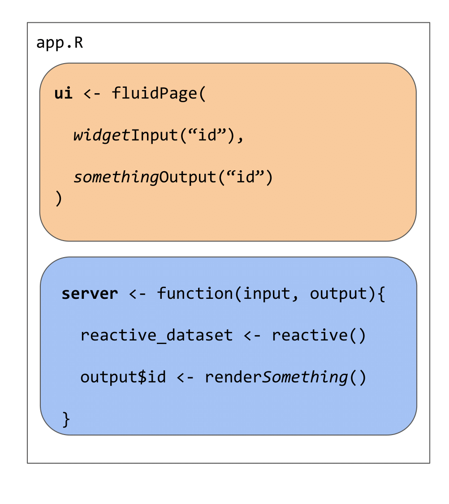
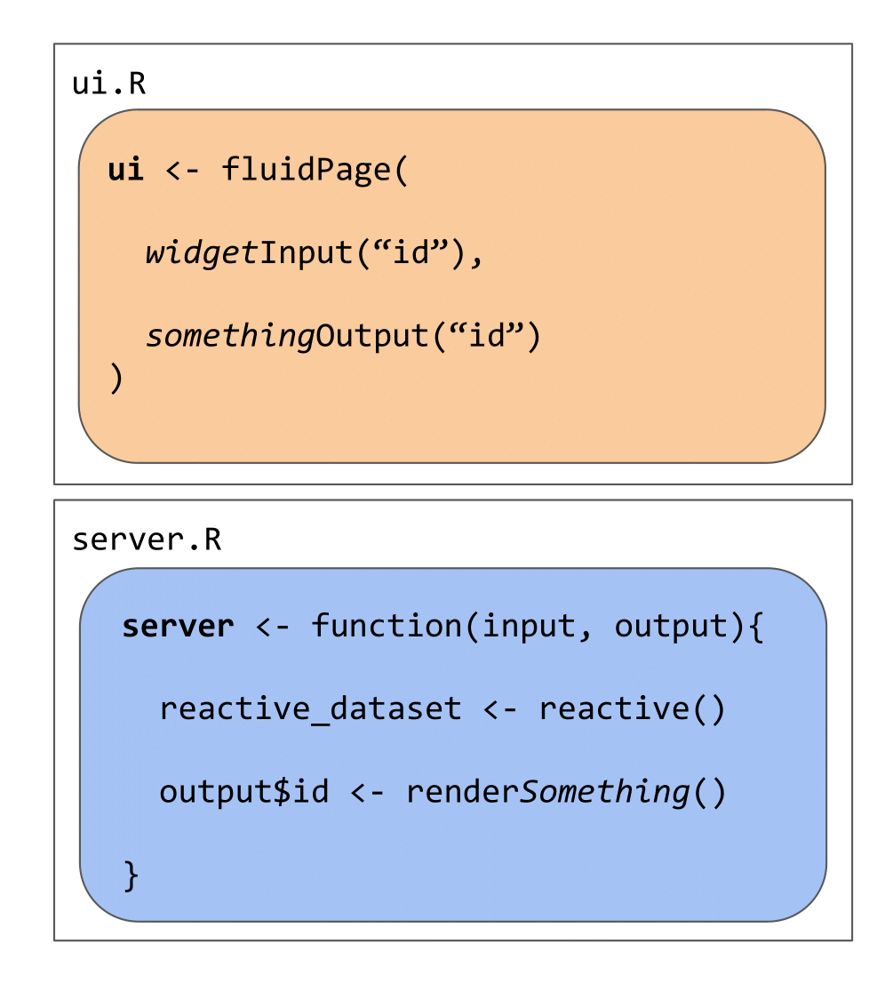
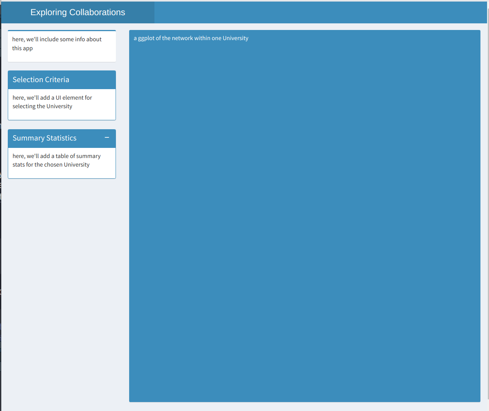
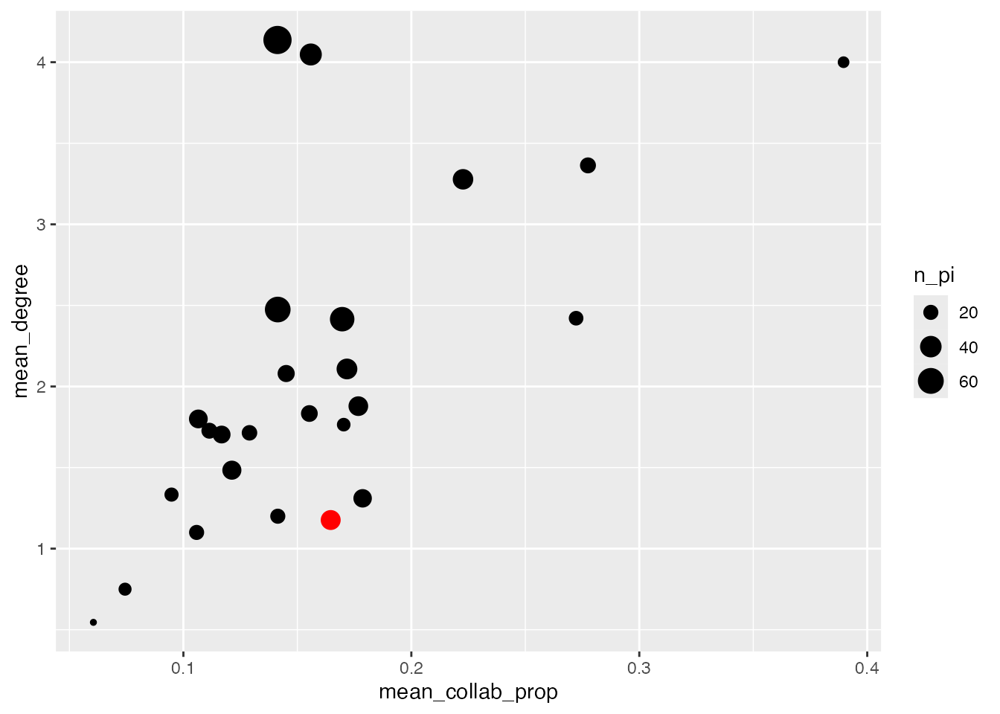

## read in the data
intra_list <- readr::read_rds(here::here("posts/2025-07-06-CSEE-intro-shiny/intra-list_clean.RDS"))
## what type of object are the data are stored in?
class(intra_list)[1] "list"Nikki Moore
McGill University
Andrew MacDonald
Université de Sherbrooke
Jake Lawlor
McGill University
July 6, 2025
There are many reasons to consider using Shiny for a project:
To ease into things, we will familiarize ourselves with the data that we will use to create a Shiny app together. At the same time, we will practice indexing lists, plotting, and making functions. By the end of this section, we will have made a plot that we will add interactivity to using Shiny.
We will be using a dataset on networks of scientific collaboration within the ecology and evolution departments of 25 Canadian universities. For each university, we have a count of the number of co-authored publications between each pair of ecology and evolution professors.
Lucas Eckert has kindly provided us with this data, and will be giving a talk on patterns of collaboration on Wednesday July 9th at 4:00pm (don’t miss it!).
Let’s explore the data:
## read in the data
intra_list <- readr::read_rds(here::here("posts/2025-07-06-CSEE-intro-shiny/intra-list_clean.RDS"))
## what type of object are the data are stored in?
class(intra_list)[1] "list"As you can see, the data are stored in a list object.
In R lists act as containers. Unlike atomic vectors, the contents of a list are not restricted to a single mode and can encompass any mixture of data types. Lists are sometimes called generic vectors, because the elements of a list can by of any type of R object, even lists containing further lists. This property makes them fundamentally different from atomic vectors.
A list is a special type of vector. Each element can be a different type.
Create lists using list():
The content of elements of a list can be retrieved by using double square brackets.
Elements of a list can be named (i.e. lists can have the names attribute).
And elements can be accessed by their names:
In our data list, each element of the list stores the collaboration network within one university, and the names attribute tells which university.
Try indexing intra_list to get the collaboration network for McGill University. What is the shape of the resulting dataset? (list, matrix, data frame, vector etc)
[1] "Carleton University" "Dalhousie University"
[3] "McGill University" "McMaster University"
[5] "Memorial University of Newfoundland" "Queen's University"
[7] "Simon Fraser University" "Trent University"
[9] "Université de Montréal" "Université du Québec à Montréal"
[11] "Université du Québec à Rimouski" "Université Laval"
[13] "University of Alberta" "University of British Columbia"
[15] "University of Calgary" "University of Guelph"
[17] "University of Manitoba" "University of New Brunswick"
[19] "University of Ottawa" "University of Saskatchewan"
[21] "University of Toronto" "University of Victoria"
[23] "University of Waterloo" "University of Western Ontario"
[25] "University of Windsor" ## access element containing data for McGill University
network <- intra_list[['McGill University']]
network[1:5, 1:5] abouheif_ehab_mcgill barrett_rowan_mcgill
abouheif_ehab_mcgill 0 0
barrett_rowan_mcgill 0 0
bell_graham_mcgill 0 4
bennett_elena_mcgill 0 0
boivin_guy_mcgill 0 0
bell_graham_mcgill bennett_elena_mcgill boivin_guy_mcgill
abouheif_ehab_mcgill 0 0 0
barrett_rowan_mcgill 4 0 0
bell_graham_mcgill 0 0 0
bennett_elena_mcgill 0 0 0
boivin_guy_mcgill 0 0 0Let’s look at the format of the list elements:
Each university collaboration network is represented by a 2D matrix (similar to one used to represent species interaction networks) where rows and columns represent researchers and cells contain the number of shared publications between two researchers.
Our shiny app will feature visualizations of this dataset. Here is a short introduction to plotting in ggplot2, followed by a demonstration of a network plot using ggraph.
We are going to be using functions from the ggplot2 package to create visualizations of data. Functions are predefined bits of code that automate more complicated actions. R itself has many built-in functions, but we can access many more by loading other packages of functions and data into R.
If you don’t yet have this package installed, run this line of code:
And load the package using the library() function:
Let’s also load a dataset to practice making a plot with:
| species | island | bill_length_mm | bill_depth_mm | flipper_length_mm | body_mass_g | sex | year |
|---|---|---|---|---|---|---|---|
| Adelie | Torgersen | 39.1 | 18.7 | 181 | 3750 | male | 2007 |
| Adelie | Torgersen | 39.5 | 17.4 | 186 | 3800 | female | 2007 |
| Adelie | Torgersen | 40.3 | 18.0 | 195 | 3250 | female | 2007 |
| Adelie | Torgersen | NA | NA | NA | NA | NA | 2007 |
| Adelie | Torgersen | 36.7 | 19.3 | 193 | 3450 | female | 2007 |
| Adelie | Torgersen | 39.3 | 20.6 | 190 | 3650 | male | 2007 |
ggplot2 is a powerful package that allows you to create complex plots from tabular data (data in a table format with rows and columns). The gg in ggplot2 stands for “grammar of graphics”, and the package uses consistent vocabulary to create plots of widely varying types. Therefore, we only need small changes to our code if the underlying data changes or we decide to make a box plot instead of a scatter plot. This approach helps you create publication-quality plots with minimal adjusting and tweaking.
ggplot plots are built step by step by adding new layers, which allows for extensive flexibility and customization of plots.
We use the ggplot() function to create a plot. In order to tell it what data to use, we need to specify the data argument. An argument is an input that a function takes, and you set arguments using the = sign.
We get a blank plot because we haven’t told ggplot() which variables we want to correspond to parts of the plot. We do this using the mapping argument. We can specify the “mapping” of variables to plot elements, such as x/y coordinates, size, or shape, by using the aes() function.
Now we’ve got a plot with x and y axes corresponding to variables from the iris data. However, we haven’t specified how we want the data to be displayed. We do this using geom_ functions, which specify the type of geometry we want, such as points, lines, or bars. We can add a geom_point() layer to our plot by using the + sign. We indent onto a new line to make it easier to read, and we have to end the first line with the + sign.
We want our app to display the collaboration network for a university that the user of our Shiny app will select, so let’s start by making a plot of the collaboration network for McGill University.
ggplot likes tidy data, where each row of the data is an observation and each column represents different variables describing that observation. Because our network data are not in this format, we need the help of another package called package to plot them. Let’s install and load it:
Attaching package: 'tidygraph'The following object is masked from 'package:stats':
filterlibrary(ggraph)
# Create graph
graph <- as_tbl_graph(intra_list[["McGill University"]]) |>
mutate(degree = centrality_degree(mode = 'in'))
# plot using ggraph
ggraph(graph, layout = 'circle') +
geom_edge_fan(aes(alpha = after_stat(index)), show.legend = FALSE) +
geom_node_point(aes(size = degree)) +
theme_graph(foreground = 'steelblue',
fg_text_colour = 'white')
If we only had one university’s network to plot, we could stop here… but we have 24 others to plot. Let’s wrap our code in a function so that we can repeat several operations with a single command.
You can write your own functions in order to make repetitive operations using a single command. Let’s start by defining our function plot_network and the input parameter(s) that the user will feed to the function. Afterwards you will define the operation that you desire to program in the body of the function within curly braces { }. Finally, you need to assign the result (or output) of your function in the return() statement.
Write a function called plot_network. Our function will take two arguments: university (a string defining the name of the university to plot) and network_list (the list of collaboration networks). In the body of the function, we will index the network_list to obtain the matrix of collaborations for the university.
Using what you know about the arguments it needs, call the function to make a plot of Trent University’s collaboration network.
plot_network <- function(university, network_list) {
## index the network list for the selected university
one_uni_matrix = network_list[[university]]
graph <- as_tbl_graph(one_uni_matrix) |>
mutate(degree = centrality_degree(mode = 'in'))
# plot using ggraph
one_uni_plot <- ggraph(graph, layout = 'circle') +
geom_edge_fan(aes(alpha = after_stat(index)), show.legend = FALSE) +
geom_node_point(aes(size = degree)) +
theme_graph(foreground = 'steelblue',
fg_text_colour = 'white')
return(one_uni_plot)
}Shiny can be useful for performing calculations. However we can reduce the complexity of our app by performing calculations beforehand and simply using Shiny to subset and display the results.
We have a database of summary statistics that Lucas calculated using the collaboration dataset:
stats <- readr::read_rds(here::here(
"posts/2025-07-06-CSEE-intro-shiny/intra-stats_clean.RDS"
))
knitr::kable(head(stats))| inst | n_pi | mean_collab_prop | mean_degree |
|---|---|---|---|
| Carleton University | 21 | 0.1289936 | 1.7142857 |
| Dalhousie University | 34 | 0.1646219 | 1.1764706 |
| McGill University | 42 | 0.1558925 | 4.0476190 |
| McMaster University | 11 | 0.0605210 | 0.5454545 |
| Memorial University of Newfoundland | 31 | 0.1212651 | 1.4838710 |
| Queen’s University | 24 | 0.1552643 | 1.8333333 |
Let’s make a simple function which returns a table of summary statistics for just one chosen university:
make_stat_table <- function(university, stats_dataframe){
## get stats for the chosen school
df <- stats_dataframe[which(stats_dataframe$inst == university),]
## reformat the data frame
new_df <- data.frame(
Statistic = c("Number of P.I.s", "Mean collab prop", "Mean degree"),
Value = c(df$n_pi, df$mean_collab_prop, df$mean_degree)
)
## display table
return(new_df)
}
make_stat_table("Trent University", stats_dataframe = stats) Statistic Value
1 Number of P.I.s 19.0000000
2 Mean collab prop 0.2722764
3 Mean degree 2.4210526With these tools, we’re ready to start building a Shiny app!
Here is a minimal Shiny app which displays the collaboration dataset.
library(shiny)
library(tidygraph)
library(ggraph)
library(ggplot2)
library(tidyverse)
## read in Lucas's data
intra_list <- readRDS("intra-list_clean.RDS")
## it is a list with 25 elements containing the data for each of the 25 Canadian universities with the most eco/evo PIs
## each element is a matrix where each node is a PI who received an NSERC discovery grant through the ecology and evolution stream between 2013-22
## each edge in the matrix represents the number of co-authored publications between each PI
## read in an extra data frame of summary statistics about each university
stats <- readRDS("intra-stats_clean.RDS")
## n_pi = number of PIs who received an NSERC discovery grants
## mean_collab_prop = mean of the proportions of each’s researchers publications that come from intra-institution collaborations
## mean_degree = mean number of collaborators
plot_network <- function(university, network_list) {
## index the network list for the selected university
one_uni_matrix = network_list[[university]]
graph <- as_tbl_graph(one_uni_matrix) |>
mutate(degree = centrality_degree(mode = 'in'))
# plot using ggraph
one_uni_plot <- ggraph(graph, layout = 'circle') +
geom_edge_fan(aes(alpha = after_stat(index)), show.legend = FALSE) +
geom_node_point(aes(size = degree)) +
theme_graph(foreground = 'steelblue',
fg_text_colour = 'white')
return(one_uni_plot)
}
make_stat_table <- function(university, stats_dataframe){
## get stats for the chosen school
df <- stats_dataframe[which(stats_dataframe$inst == university),]
## reformat the data frame
new_df <- data.frame(
Statistic = c("Number of P.I.s", "Mean collab prop", "Mean degree"),
Value = c(df$n_pi, df$mean_collab_prop, df$mean_degree)
)
## display table
return(new_df)
}
ui <- fluidPage(
## write title for app:
titlePanel("Intra-university collaboration networks"),
## add a dropdown menu where user can select a university
selectInput(
inputId = "dropdown_input",
label = "Choose a school:",
choices = names(intra_list)
),
## display network plot for chosen university
plotOutput("schoolPlot"),
## display some stats for the chosen university
tableOutput("schoolStats")
)
# Define server logic required to draw a histogram
server <- function(input, output) {
## define plot output
output$schoolPlot <- renderPlot({
## get the chosen school from input into dropdown menu
choice = input$dropdown_input
## display network plot for the school that was chosen
plot_network(university = choice, network_list = intra_list)
})
## display some statistics for the chosen school
output$schoolStats <- renderTable({
## get the chosen school from input into dropdown menu
choice = input$dropdown_input
make_stat_table(university = choice, stats_dataframe = stats)
})
}
## run the app
shinyApp(ui = ui, server = server)Before we walk through the structure of a Shiny app, take a moment to look at the code above. We’ll each take some time to Think about the code and guess at what it does. Then we’ll encourage you to turn to your neighbours (Pair) and to discuss what you think the app does, and what it looks like (Share). Consider the following questions as you work through this exercise.
We’ve now seen the basic building blocks of a Shiny app:
The user interface and server communicate through IDs that we assign to inputs from the user and outputs from the server.


user_selection) and the blue squares would both be a different id (e.g. app_output).
We use an ID (in orange) to link the user input in the UI to the reactive values used in the server

We use another ID (in blue) to link the output created in the server to the output shown in the user interface:

renderSomething function.
These elements can all be placed in one script named app.R or separately in scripts named ui.R and server.R. The choice is up to you, although it becomes easier to work in separate ui.R and server.R scripts when the Shiny app becomes more complex.

app.R
ui.R and server.RNow that we understand the basic structure of a Shiny app, we will use the extension shinyDashboards to construct a custom Shiny App to visualize the collaboration dataset. First, we need a few additional packages.
Attaching package: 'shinydashboard'The following object is masked from 'package:graphics':
box
Attaching package: 'dplyr'The following objects are masked from 'package:stats':
filter, lagThe following objects are masked from 'package:base':
intersect, setdiff, setequal, unionWe will create our app using defaults from the ShinyDashboard package, which always includes three main components: a header, using dashboardHeader(), a sidebar, using dashboardSidebar(), and a body, using dashboardBody(). These are then added together using the dashboardPage() function.
Building these elements is less like usual R coding, and more like web design, since we are, in fact, designing a unser interface for a web app. Here, we’ll make a basic layout before populating it.
library(shiny)
library(shinydashboard)
# create the header of our app
header <- dashboardHeader(
title = "Exploring Collaborations",
titleWidth = 350 # since we have a long title, we need to extend width element in pixels
)
# create dashboard body - this is the major UI element
body <- dashboardBody(
# make first row of elements (actually, this will be the only row)
fluidRow(
# make first column, 25% of page - width = 3 of 12 columns
column(width = 3,
# Box 1: text explaining what this app is
#-----------------------------------------------
box( width = NULL,
status="primary", # this line can change the automatic color of the box.
title = NULL,
p("here, we'll include some info about this app")
), # end box 1
# box 2 : input for selecting University
#-----------------------------------------------
box(width = NULL, status = "primary",
title = "Selection Criteria", solidHeader = TRUE,
p("here, we'll add a UI element for selecting the University"),
), # end box 2
# box 3: Table of
#------------------------------------------------
box(width = NULL, status = "primary",
solidHeader = TRUE, collapsible = T,
title = "Summary Statistics",
p("here, we'll add a table of summary stats for the chosen University")
) # end box 3
), # end column 1
# second column - 75% of page (9 of 12 columns)
#--------------------------------------------------
column(width = 9,
# Box 4: ggplot2 figure
box(width = NULL, background = "light-blue", height = 850,
p("a ggplot of the network within one University"),
) # end box with map
) # end second column
) # end fluidrow
) # end body
# add elements together
ui <- dashboardPage(
skin = "blue",
header = header,
sidebar = dashboardSidebar(disable = TRUE), # here, we only have one tab of our app, so we don't need a sidebar
body = body
)
server <- function(input, output){}
## run the app
shinyApp(ui = ui, server = server)This Shiny app code produces the app below. It is also in the course folder as app_shinydashboard_blank.png.

Lets practice putting the parts of a Shiny app together. Starting from the blank dashboard above, add in the UI and server components from our previous minimal app.
Box 1, the information about the app, can include the following text:
for each of the 25 Canadian universities with the most eco/evo PIs
each element is a matrix where each node is a PI who received an NSERC
discovery grant through the ecology and evolution stream between 2013-22
each edge in the matrix represents the number of co-authored publications
between each PIBONUS exercise: add a new box which contains the sentence “The selected University is X” where X is replaced with whatever the user selects from the dropdown menu
A finished version of this app is in the course folder under the name app_02_shinydashboard.R
reactive()In the code we’ve written so far, we reference the same input value in three different parts of the app. We can approach this in a different way, by creating an intermediate reactive value that depends on the user input. All the reactive elements (the figure and the text box) will then depend on this new value, instead of the original input. Note that in this case this is NOT necessary, but in many more advanced Shiny projects this becomes essential. Read more about it here:
Here is the server code from app_02_shinydashboard.R, which we just wrote:
server <- function(input, output) {
## define plot output
output$schoolPlot <- renderPlot({
## get the chosen school from input into dropdown menu
choice = input$dropdown_input
## display network plot for the school that was chosen
plot_network(university = choice, network_list = intra_list)
})
## display some statistics for the chosen school
output$schoolStats <- renderTable({
## get the chosen school from input into dropdown menu
choice = input$dropdown_input
make_stat_table(university = choice, stats_dataframe = stats)
})
output$choice_name <- renderText({input$dropdown_input})
}And here is a version using reactive()
server <- function(input, output) {
## get the chosen school from input into dropdown menu
choice <- reactive(input$dropdown_input)
## display network plot for the school that was chosen
output$schoolPlot <- renderPlot({
plot_network(university = choice(), network_list = intra_list)
})
## display some statistics for the chosen school
output$schoolStats <- renderTable({
make_stat_table(university = choice(), stats_dataframe = stats)
})
# get the school name to print that too
output$choice_name <- renderText(choice())
}In this section, we’ll practice adding something to the Server side of the app as well. Here is a ggplot2 figure, based on the stats table, showing a relationship between two University-level variables:
library(dplyr)
stats |>
mutate(is_selected = inst == "Dalhousie University") |>
ggplot(aes(x = mean_collab_prop, y = mean_degree, size = n_pi, colour = is_selected)) +
guides(colour = "none") +
geom_point() +
scale_colour_manual(values = c("black", "red"))
Add this figure to our app. Connect it to the input selected by the user, so that the selected point changes along with everything else when a University is chosen.
Solution is in the app app_04_highlight_figure.R
@online{moore2025,
author = {Moore, Nikki and MacDonald, Andrew and Lawlor, Jake},
title = {Introduction to {Shiny} {Apps} {CSEE}},
date = {2025-07-06},
url = {https://bios2.github.io/posts/2025-07-06-CSEE-intro-shiny/},
langid = {en}
}